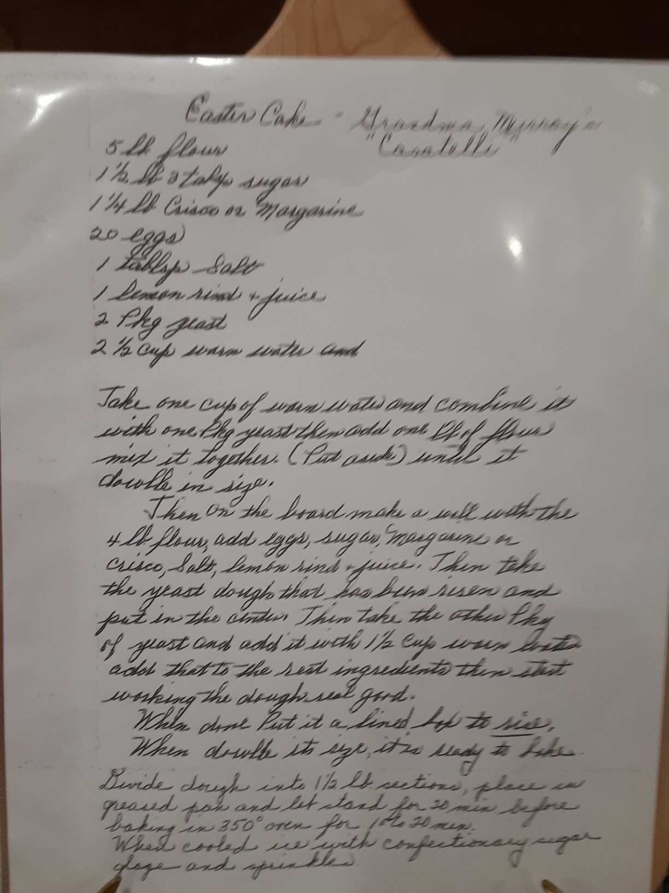

Heirloom
Casatelli (Easter Brioche)
Family recipe, updated to grams for accuracy (“for the love of all desserts, use the metric system”).
This is Grandma Murray’s casatelli — an Italian Easter bread — written out in her own hand, complete with 20 eggs and 5 pounds of flour for the full batch. The version below is the working version: converted to grams, and scaled down to make two or three loaves instead of a dozen.

Ingredients
- 392 g flour
- 50 g flour, for the starter
- 85 g margarine
- 102 g sugar
- 3 eggs
- pinch of salt
- 1/5 lemon (rind and juice)
- 1 packet instant yeast
- 89 g water
- 54 g water, for the starter
Method
- Make the starter: stir the water and yeast package until milky, then stir in the starter flour. Let sit at least 1 hour in a warm place until bubbly and large.
- Cream the margarine and sugar together in a mixer with the paddle attachment until fluffy. Remove from the bowl and set aside.
- Mix the egg with the remaining water; stir well. Add the lemon rind and juice, and 1 tsp vanilla extract if you want extra dessert flavor.
- In the mixer, combine the remaining flour and salt using the dough hook.
- Slowly add the egg mixture to the flour over about 2 minutes. Once combined, add the starter and mix on medium speed until mostly homogeneous. Add water a tablespoon at a time (no more than 3 tbsp) if it won’t come together.
- Once the dough pulls away from the sides of the bowl, add the margarine-and-sugar mixture and mix on low-medium until incorporated. It should be a rough dough.
- Shape into a ball, place in a greased bowl, cover with plastic wrap, and let rise overnight in the refrigerator — not optional, it must be cold.
- The next morning, bring the dough to room temperature (about 2–3 hours) until puffed up.
- Divide and shape into casatelli. Place in a sprayed pan and let rise at least 2 hours, until puffed.
- Brush with egg white. Bake at 375°F for 15 minutes, then check and bake an additional 5 minutes as needed. Internal temperature should read 190–210°F.